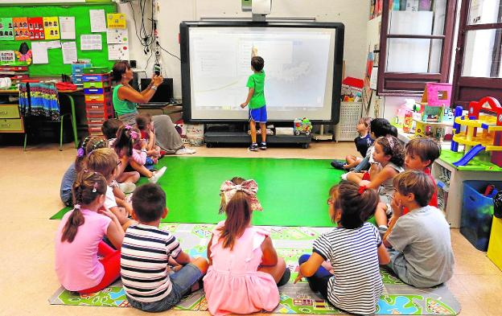

En esta primera etapa contamos con todas las herramientas de aprendizaje necesarias para
estimular y desarrollar la evolución de nuestros pequeños.
Los alumnos
aprenden a través de la manipulación, la observación y la experimentación de
manera lúdica, todo con el objetivo de reconocer y motivar el potencial de los más pequeños.
Le damos mucha importancia al aprendizaje de otros idiomas ya que es un vinculo fundamental para relacionarnos con otras personas y culturas.
Por eso apostamos por incluir el aprendizaje de la lengua inglesa desde el primer curso de la etapa.
